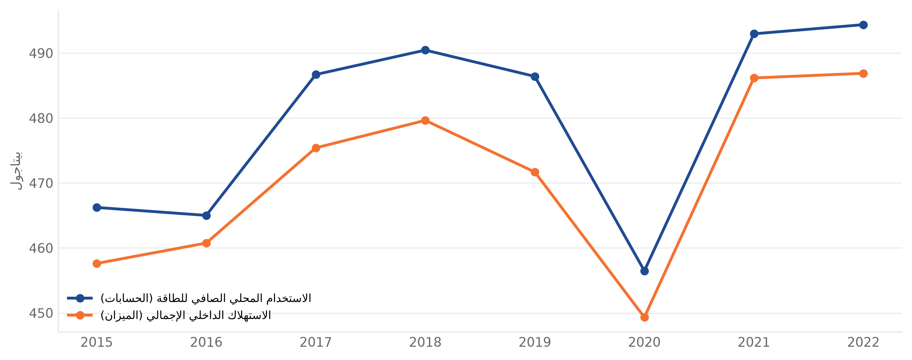
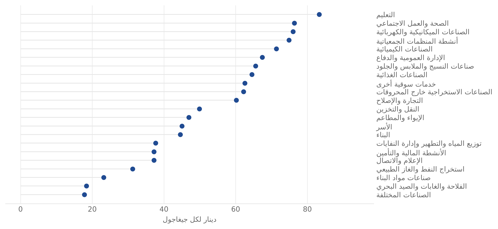
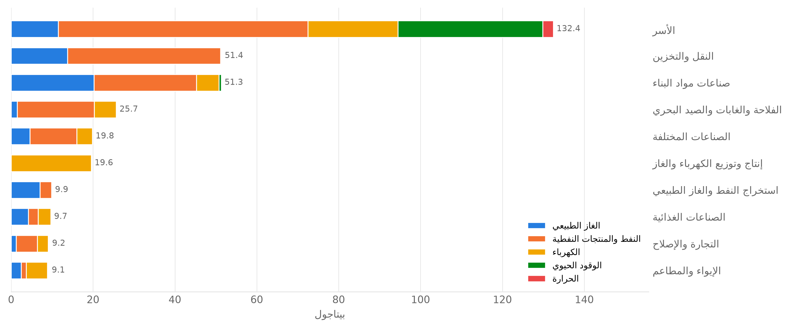
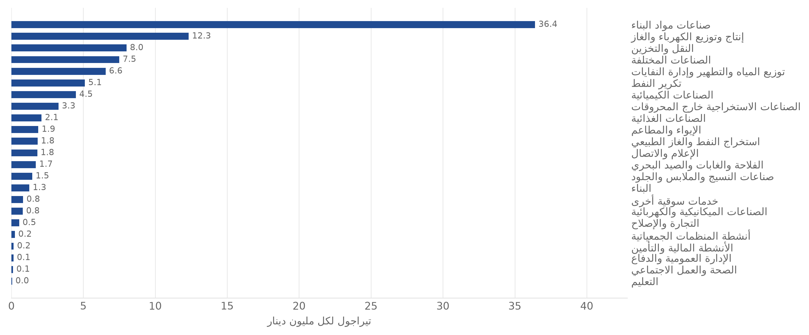

محتوى هذا العرض
- الإقليم والإقامة والربط بين الحسابات والميزان.
- الاختبارات التي يجب أن ينجح فيها كل إعداد.
- النتائج الأولى من 2015 إلى 2022، وطريقة نشرها.
من إقليم الميزان إلى مقيمي الحسابات، وما تبينه الحسابات
| الاستخدام المحلي الصافي للطاقة في الحسابات | مبدأ الإقامة |
| − الطاقة التي يستخدمها المقيمون في الخارج | |
| + الطاقة التي يستخدمها غير المقيمين على التراب الوطني | |
| ± فروق أخرى | |
| = الاستهلاك الداخلي الإجمالي في الميزان | المبدأ الإقليمي |
(Eurostat, 2014، الفقرات 109 إلى 111)
| السنة | الميزان (تيراجول) | الجرد 1.D.1.a (تيراجول) | الفرق (%) |
|---|---|---|---|
| 2015 | 8,750 | 8,744 | 0.07 |
| 2016 | 9,295 | 9,300 | −0.06 |
| 2017 | 10,886 | 10,882 | 0.03 |
| 2018 | 12,309 | 12,292 | 0.14 |
| 2019 | 12,979 | 12,999 | −0.15 |
| 2020 | 4,396 | 4,376 | 0.45 |
| 2021 | 5,527 | 5,534 | −0.13 |
| 2022 | 9,211 | 9,191 | 0.22 |
تتطابق مستودعات الطيران في الميزان والجرد تطابقًا وثيقًا في كل سنة.

في 2022: 494 بيتاجول مقابل 487 بيتاجول.



تستخدم مواد البناء نحو 36 تيراجول لكل مليون دينار من القيمة المضافة.
| الاستخدامات (بيتاجول) | A | B | C | D | E | F | H | أخرى | الأسر | الصادرات |
|---|---|---|---|---|---|---|---|---|---|---|
| النفط والمنتجات النفطية | 19 | 6 | 110 | 0 | 1 | 6 | 37 | 14 | 61 | 81 |
| الكهرباء | 5 | 1 | 20 | 22 | 3 | 0 | 0 | 14 | 22 | 1 |
| الغاز الطبيعي | 2 | 7 | 44 | 144 | 2 | 0 | 14 | 7 | 12 | 0 |
| الوقود الحيوي | 18 | 0 | 1 | 0 | 0 | 0 | 0 | 1 | 35 | 0 |
| الحرارة | 0 | 0 | 3 | 0 | 0 | 0 | 0 | 0 | 3 | 0 |
| استخدام المنتجات الطاقوية لأغراض غير طاقوية | 0 | 0 | 0 | 0 | 0 | 7 | 0 | 0 | 0 | 0 |
حسابات الطاقة والانبعاثات في تونس